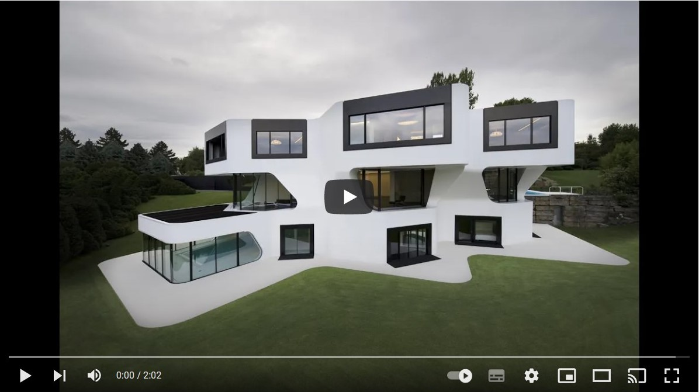
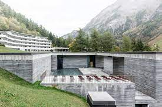

Los edificios de caracter minimalista han generado una gran inspiracion para otros grandes arquitectos a lo largo del mundo.
Los mejores edificios de estilo minimalista, tienen muchos conceptos estéticos en común. Cada uno tiene un toque difernete pero sin salirse del concepto previamente marcado.
Los edificios más destacados son:
- Centro Roberto Garza Sada
- Dupli Casa
- Casa das hitórias Paula Rego
- Pabellón aleman de Barcelona
- Therme Vals
Es una obra del arquitecto japonés Tadao Ando. Forma parte de la Universidad de Monterrey de México, y se ha ideado como una puerta al centro educativo

Esta obra de J Mayer H Architects se ubica en Ludwigsburg, Alemania. Se construyó en 2005. Su secreto es que está conectada con el paisaje existente.
Es obra del arquitecto Souto de Moura y se encuentra en Cascais, Portugal. Cuenta con dos estructuras en forma de chimenea, revestidas de hormigón pigmentado.
Fue diseñado por Ludwig Mies van der Rohe y Lilly Reich como pabellón de Alemania para la Exposición Internacional de Barcelona que se celebró en Montjuïc en 1929.

Obra del arquitecto Peter Zumthor, las termas de Vals, en Suiza, son un resort en el que un exquisito uso de los materiales se mezcla con un majestuoso uso del espacio.
